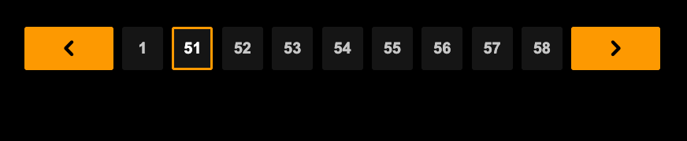

借楼发一个Pagination 分页SEO的最佳实践
分页有以下几种：
1. 传统分页
2. 加载 Load More
3. 无限加载
这些都要做URL级别的分页，特别是无限加载，传统的JavaScript框架，包括外面买来的模版都没有做这个事情。
无限加载的时候你首次渲染读取的东西以外的内容要通过点击按钮或者下滑再触发。
拿视频网站举例，即便是无限加载，也要做到
/tag/seovideo/
/tag/seovideo/page/2
/tag/seovideo/page/3
/tage/seovideo/page/n举个电商的例子。很多电商的集合页的排名，会取决于SKU的数量。像传统的电商都会把分页做好，那么谷歌只要你这个文件夹（集合）里面到底有多少“产品”。
如果不做好分页，即便你这个类目（片种）下有1000个item，谷歌可能只看得到前 N 个（首次渲染和数据传输）。
这个就是谷歌的标准答案，如果你有分页，或者你可以做无限加载，去改代码吧。细节都在里面。
引用 @aronhouyu：很挑剔 你懂得 https://x.com/aronhouyu/status/2113187421328494922
